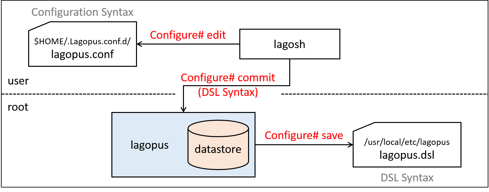

8. Lagopus software switch datastore and DSL syntax¶
This section describes how Lagopus software switch stores configuration data in it’s datastore at runtime, and explain each parameters used in DSL syntax configuration file which is loaded to datastore at boot time.
There are two types of syntax (format) used to describe configuration of Lagopus software switch. Refer to Configuration syntax types for details about both syntax.
8.1. datastore overview¶
“Lagopus datastore” is a database where configuration, and other data (ex: flows) used at runtime are stored.
This diagram shows how datastore interacts with configuration files (lagopus.conf, lagopus.dsl) and lagosh command.
$HOME/.lagopus.conf.d/*.conf(ex:lagopus.conf) are written in lagosh configuration syntax./usr/loca/etc/lagopus/*.dsl(ex:lagopus.dsl) are written in DSL syntax.- Since datastore can only read files in DSL syntax, lagosh will translate
*.conffile to DSL syntax while communicating with lagopus datastore via TCP. - lagopus will read
*.dsldirectly from the file at boot time.- Use
-C filenameor--config filenameoption to specify configuration file. (DSL format) - If not specified, lagopus will load
/usr/loca/etc/lagopus/lagopus.dsl
- Use
8.1.1. lagosh operation and datastore¶
Instead of editing *.dsl file directly, you can edit/commit/save configuration using lagosh.
Refer to Using Lagopus CLI (lagosh) for detailed explanation about lagosh configuration commands.
Examples:
Start lagosh and enter configuration mode.
$ lagosh Lagosh> configure Configure#
Configure# editwill create working file under$HOME/.lagopus.conf.d/- edit file in lagosh configuration syntax.
Configure# commitwill apply changes to lagopus running configuration (datastore).Configure# savewill write running configuration to/usr/local/etc/lagopus/lagopus.dslin DSL syntax.
8.2. Configuration syntax types¶
There are two types of syntax (format) used to describe configuration of Lagopus software switch.
configuration syntax
- Used in
*.conffiles. - Used when editing via
lagosh.
- Used in
DSL syntax
- Used in
*.dslfiles. - Used by
lagopusand it’sdatastore.
“configuration syntax” consists of
object-name,identifier, andattributevaluepair. Some object-name may not have identifier.<object-name> [identifier] { <attribute value>; ... } } # example: interface { interface01 { type ethernet-rawsock; device eth1; mtu 1500; ip-addr 127.0.0.1; } }
- Used in
In “DSL syntax”, each line describes single configuration command.
<object-name> [identifier] [operation] <-attribute value> ... # example: interface interface01 create -type ethernet-rawsock -device eth1 -mtu 1500 -ip-addr 127.0.0.1
Refer to Configurable objects and DSL syntax for details about DSL syntax.
8.2.1. Converting between .conf and .dsl syntax¶
By using --dsl-encode --dsl-decode option, you can convert between .conf and .dsl syntax.
Examples:
.confto.dsl$ head .lagopus.conf.d/lagopus.conf log { syslog; ident lagopus; debuglevel 0; packetdump ""; } datastore { addr 0.0.0.0; port 12345; protocol tcp; $ lagosh --dsl-encode .lagopus.conf.d/lagopus.conf log -syslog -ident lagopus -debuglevel 0 -packetdump "" datastore -addr 0.0.0.0 -port 12345 -protocol tcp -tls false agent -channelq-size 1000 -channelq-max-batches 1000 ... snip ...
.dslto.conf$ head /usr/local/etc/lagopus/lagopus.dsl # all the log objects' attribute log -syslog -ident lagopus -debuglevel 0 log -packetdump "" # all the datastore objects' attribute datastore -addr 0.0.0.0 -port 12345 -protocol tcp -tls false # all the agent objects' attribute agent -channelq-size 1000 -channelq-max-batches 1000 $ lagosh --dsl-decode /usr/local/etc/lagopus/lagopus.dsl log { syslog; ident lagopus; debuglevel 0; packetdump ""; } datastore { addr 0.0.0.0; port 12345; protocol tcp; tls false; } agent { channelq-size 1000; channelq-max-batches 1000; } ... snip ...
8.3. Configurable objects and DSL syntax¶
This diagram shows overview of configurable objects of lagopus. Attributes of major configurable objects are described below.
8.3.1. log object¶
“log object” sets log output destination and level.
log <attribute value> ...
# example:
log -syslog -ident lagopus -debuglevel 0
log -file /home/user/lagopus.log -debuglevel 0
-syslogSet log destination to syslog. takes no value.-fileSet log destination to file.- You can set two lines each specifying
-syslogand-file, but cannot use both attributes in one line.
- You can set two lines each specifying
-identOnly with-syslog. char string ident used in syslog entry. defaultlagopus.-debuglevelTakes value of0 ~ MAXIMUM_DBGLVL(UINT16_MAX). default0.- check
lagopus_msg_debugin source code for usage of debuglevel.
- check
8.3.2. datastore object¶
“datastore object” sets parameters to connect to lagopus datastore.
datastore <attribute value> ...
# example:
datastore -addr 0.0.0.0 -port 12345 -protocol tcp -tls false
-addraddress of the datastore process.-porttcp port the datastore process listens to.-protocolprotocol used to connect to datastore.tcportcp6.-tlsuse TLS or not.falseortrue.
8.3.3. tls object¶
“tls object” sets parameters related to TLS.
tsl <attribute value> ...
# example:
tls -cert-file /usr/local/etc/lagopus/catls.pem -private-key /usr/local/etc/lagopus/key.pem -certificate-store /usr/local/etc/lagopus -trust-point-conf /usr/local/etc/lagopus/check.conf
-cert-filelocation of cert file. (.pem)-private-keylocation of key file. (.pem)-certificate-storelocation to store certificates.-trust-point-conflocation of trust-point-conf file. (.conf)
8.3.4. policer-action object¶
“policer-action object” sets type of policer action.
policer-action <policer-action-identifier> create <attribute value>
# example:
policer-action pa01 create -type discard
policer-action-identifierName to identify the policer-action-typeType of policer action. Currently typediscardis only availble.
8.3.5. policer object¶
“policer object” sets policer parameters.
policer <policer-identifier> create <attribute value> ...
# example:
policer policer01 create -action pa01 -bandwidth-limit 10000 -burst-size-limit 11000 -bandwidth-percent 20
policer-identifierName to identify the policer.-actionName of policer-action associated with the policer.-bandwidth-limit-burst-size-limit-bandwidth-percent
8.3.6. queue object¶
“queue object” sets parameters of queues used by OpenFlow set-queue action.
queue <queue-identifier> create <attribute value> ...
# example:
queue queue01 create -type two-rate -id 1 -priority 50
queue-identifierName to identify the queue.-typeType of queue.single-rateortwo-rate.-idID used in OpenFlowset-queueaction.-priorityNonnegative integer,0 ~ 65535(UINT16_MAX).- Packets will be scheduled on each port using weighted round robin based on ratio of priority of queues.
-colorBehavior based on color.color-awareorcolor-blind.- Optional options for both
single-rateandtwo-rate-committed-burst-sizeCBS in bytes.-committed-information-rateCIR in bps.
- Optional option for
single-rate-excess-burst-sizeEBS in bytes.
- Optional options for
two-rate-peak-burst-sizePBS in bytes.-peak-information-ratePIR in bps.
8.3.7. interface object¶
“interface object” sets parameters of interface.
interface <interface-identifier> create <attribute value> ...
# example:
interface interface01 create -type ethernet-rawsock -device eth1 -mtu 1500 -ip-addr 127.0.0.1
interface interface01 create -type ethernet-dpdk-phy -port-number 0
interface-identifierName to identify the interface.-typeType of the interface. One of below.ethernet-dpdk-phyethernet-dpdk-vdevethernet-rawsockgrenvgrevxlanvhost-user
-deviceName of the device associated with the interface. PCI ID for dpdk.-port-numberDPDK port number. Only used by dpdk.-mtuMTU of the interface.-ip-addrIP address of the interface.
Note
Either -device or -port-number should be specified per line, not both.
8.3.8. port object¶
“port object” sets port and interface assosication.
port <port-identifier> create <attribute value>
# example:
port port01 create -interface interface01
port-identifierName to identify the port.-interfaceinterface-identifier assosiated with the port.-policerpolicer-identifier assosiated with the port.-queuequeue-identifier assosiated with the port.
8.3.9. channel object¶
“channel object” sets parameters of channel used to communicate with OpenFlow controller.
channel <channel-identifier> create <attribute value> ...
# example:
channel channel01 create -dst-addr 127.0.0.1 -dst-port 6633 -local-addr 0.0.0.0 -local-port 0 -protocol tcp
channel-identifierName to identify the channel-dst-addrIP address of the controller-dst-porttcp port number of the controller-local-addrsource IP address used when connecting to controller-local-porttcp port used when connecting to controller.0= automatically assigned.-protocolprotocol used when connecting to controller.tcportls.
8.3.10. controller object¶
“controller object” sets parameters related to OpenFlow controller.
controller <controller-identifier> create <attribute value> ...
# example:
controller controller01 create -channel channel01 -role equal -connection-type main
controller-identifierName to identify the controller.-channelchannel-identifier used to connect to the controller.-roleRole of the controller.master,slaveorequal.-connection-typeController connection type.mainorauxiliary.
8.3.11. bridge object¶
“bridge object” sets parameters of bridge.
bridge <bridge-identifier> create <attribute value> ...
# example:
bridge bridge01 create -dpid 1 -controller controller01 -port port01 1 -port port02 2 -port port03 3 -fail-mode standalone
bridge-identifierName to identify the bridge.-dpidDatapath ID. Nonnegative integer.-controllerName of controller (s) assosiated with the bridge.-port <port-identifier> <openflow-port-id>Port name and OpenFlow port ID pair(s) assoiated with the bridge.port-identifierName of the port defined in port object.openflow-port-idPort ID to be used in OpenFlow protocol. Nonnegative integer.
-fail-modeMode when connection to controller was failed.secureorstandalone.- Other optional options.
-flow-statistics-group-statistics-port-statistics-queue-statistics-table-statistics-reassemble-ip-fragments-max-buffered-packets-max-ports-max-tables-max-flows-block-looping-ports-action-type-instruction-type-reserved-port-type-group-type-group-capability-packet-inq-size-packet-inq-max-batches-up-streamq-size-up-streamq-max-batches-down-streamq-size-down-streamq-max-batches